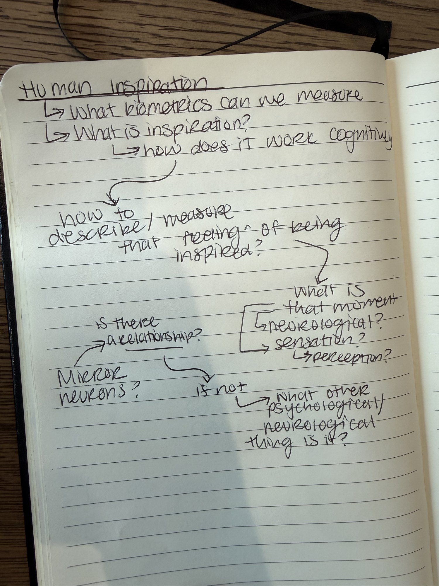
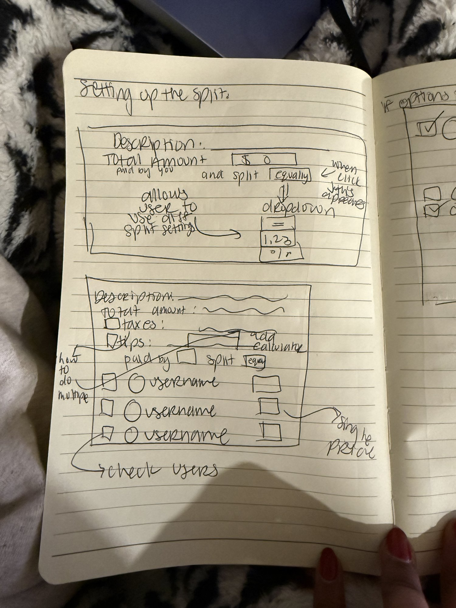
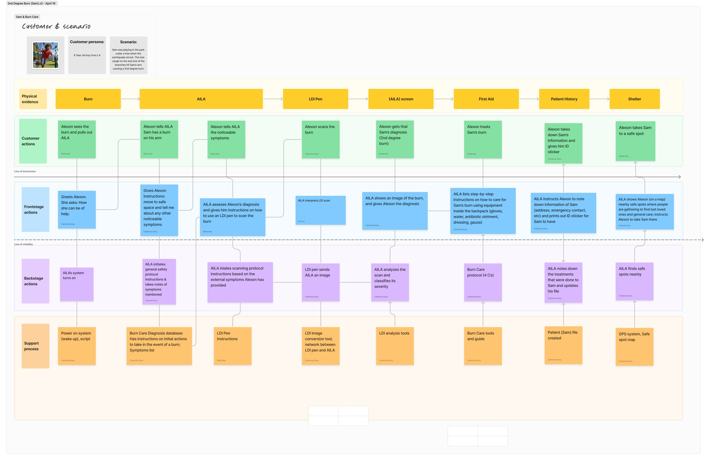
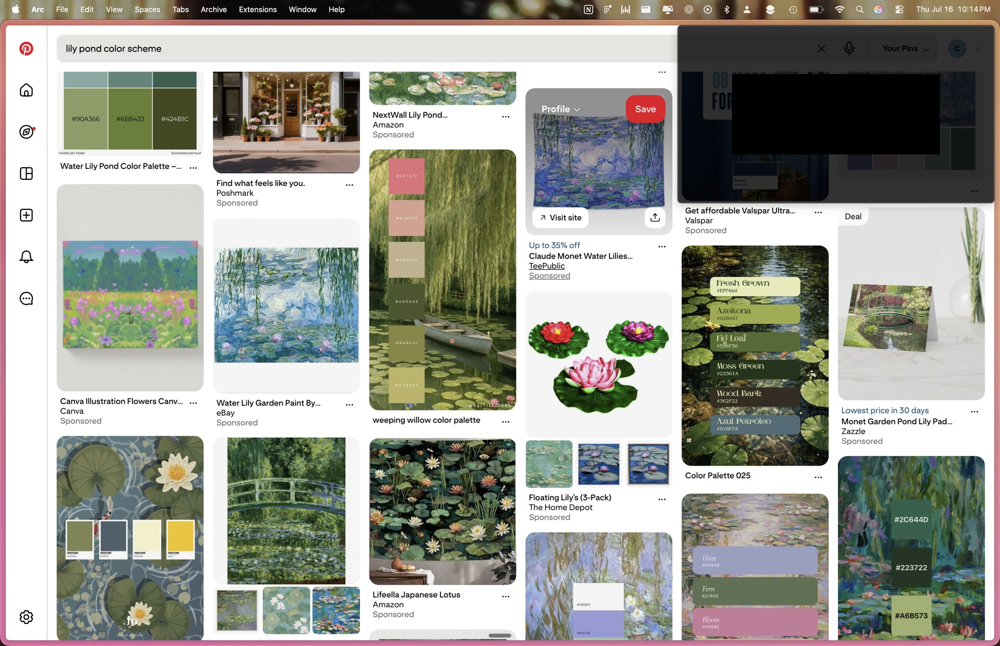
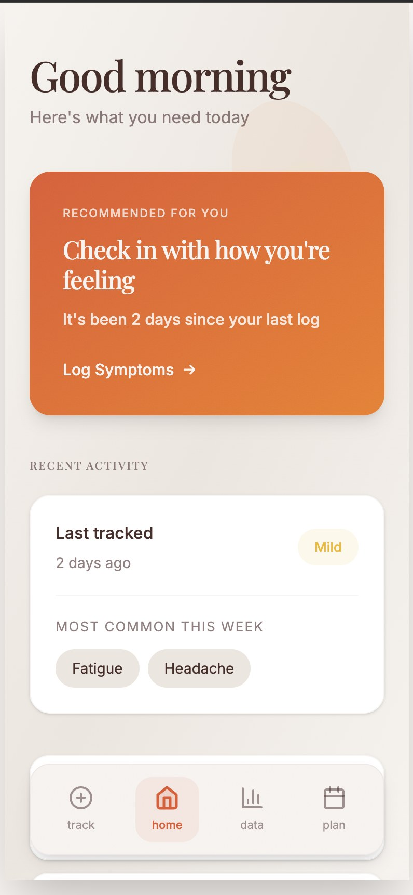
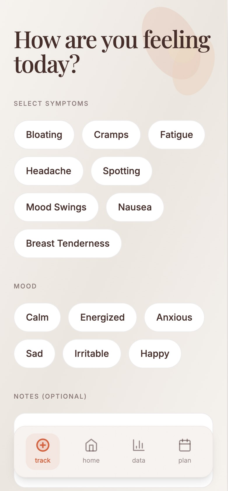
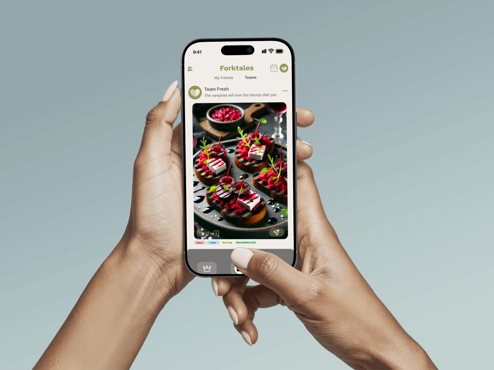

Cathy Doss is a UX/UI designer who approaches design as a process of questioning, organizing, mapping, visualizing, building, and iterating. I learned that her process is not simply about making something look good. Instead, she uses design to explore problems and understand people's experiences.
Cathy begins a project by taking notes and breaking down a broad idea into smaller questions. Rather than immediately deciding what the final interface should look like, she first tries to understand the problem from different perspectives.
For example, when exploring the idea of human inspiration, she might ask questions such as:
These questions help her move from a general topic toward a more specific design problem.


Cathy's notes show that questioning is an important part of her creative process. She uses writing to explore possibilities before deciding on a direction.
After this phase, Cathy begins to organize her ideas into frameworks. She may create a customer scenario or customer persona to understand who is experiencing the product and what that experience looks like.
She breaks the experience into different parts, such as:
Breaking the problem into these different layers allows Cathy to see what is happening from both the user's perspective and the system's perspective.

Once the larger experience is organized, she begins thinking about the interface itself. She maps the whole experience and considers what each screen needs to do.
Instead of immediately designing the visual appearance of a screen, she first thinks about its function. She may make a list in words to describe the content and purpose of each screen.
After creating the structure and experience, Cathy begins developing the visual direction of the project. She thinks about elements such as color, typography, mood, and visual references.
Moodboards help her collect and compare visual ideas. She uses platforms such as Cosmos and Instagram to find references and remember visual elements that may be useful later.

Once Cathy has a clearer visual direction, she begins building. She can import branding and visual assets into Claude and use them as part of the development process.
At this stage, the ideas and structures she developed earlier begin to become an actual interface. The work moves from notes into something that can be experienced.

Cathy's process does not end when she creates the first version. Iteration an important part of her creative process. Ideas can change as she moves between research, structure, visual design, and building.



What stood out to me about Cathy's creative process is how much of the work happens before the final interface is created. She spends time asking questions, taking notes, creating scenarios, screen mapping , and organizing information.
Her process can be understood as a cycle:
I learned that for Cathy, creative problem solving is not about having one perfect idea at the beginning. It is about asking better questions, making the problem easier to understand, and allowing the design to develop through each stage of the process.